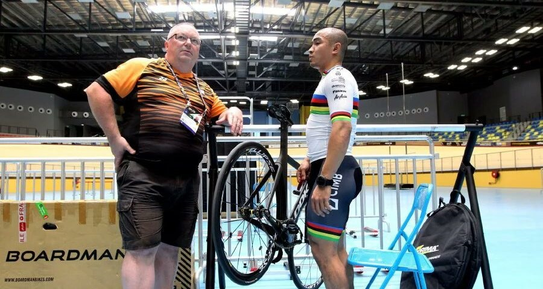

PENDAHULUAN
Saya Mariam Azwa (GS47024) merupakan pelajar Phd dari Kumpulan Penyelidik Human-Computer Interaction, FSKTM, UPM sedang menjalankan kajian yang memberi tumpuan kepada
pengalaman pengguna cacat penglihatan (VIB) menggunakan aplikasi web. Kajian ini bertujuan untuk memahami serta memperbaiki pengalaman VIB menggunakan aplikasi web.
Ini adalah kerana terdapat banyak web aplikasi sedia ada yang dibangunkan tidak mengambil kira keperluan pengguna cacat penglihat.
Satu konseptual model bernama Model Web Accessibility Interaction Experience (WAIX) [1] telah dicadangkan bagi merangkumi
elemen pengalaman pengguna VIB melayari laman web.
Oleh itu, BERITA KITA merupakan protaip yang telah di bangunkan untuk menguji model WAIX.
Sila layari BERITA KITA and nilaikan pengalaman anda melayari laman web ini, dengan menjawab survey di bawah.
Click here to take the survey
[1] Yazid, M. A., & Jantan, A. H. (2019). An Integrated Conceptual Model of Visually Impaired Users’ Experience and Technology Acceptance of a Website. International Journal of Advanced Trends in Computer Science and Engineering, 8(4), 318–322
NASIONAL
Ogos 28, 2024
Oleh Samsul bin Kamal
IPOH: Setiap kali menjelang Ogos, ratusan Jalur Gemilang dan bendera negeri Perak akan berkibar megah di sebuah unit rumah pangsa Taman Harmoni, di sini. Tidak hanya di luar rumah, pemilik kediaman itu, G Rajspari, 62, atau lebih mesra dipanggil Ratha, juga memasang bendera kebangsaan di dalam rumah dua bilik berkenaan bagi menyambut Hari Kebangsaan dan Hari Malaysia.
Ogos 28, 2024
Nor Azizah Mokhtar
KUALA LUMPUR: Kerajaan dijangka mengkaji semula dasar perancangan bandar di ibu negara untuk mengurangkan risiko berlaku insiden tidak diingini seperti tanah jerlus di Jalan Masjid India pada Jumaat lalu.
Ogos 26, 2024
Muhammad Yusri Muzamir
KUALA LUMPUR: Semakan semula kadar elaun tugas atas panggilan atau 'on call', disifatkan penting bagi memastikan doktor diberi ganjaran adil untuk kerja keras dan pengorbanan petugas sistem penjagaan kesihatan awam itu.
EKONOMI
Ogos 29, 2024
Oleh Mahanum Abdul Aziz
KUALA LUMPUR: Ekonomi Malaysia berpotensi berkembang melepasi julat sasaran kerajaan 4.0 peratus hingga 5.0 peratus bagi tahun ini, kata Presiden Persekutuan Pekilang-Pekilang Malaysia (FMM), Tan Sri Soh Thian Lai.

Ogos 29, 2024
Oleh Alzahrin Alias
KUALA LUMPUR: Eros Investments Group, firma pelaburan India akan melabur AS$1 bilion (RM4.32 bilion) di Malaysia untuk membangunkan taman kecerdasan buatan (AI) dan studio filem AI yang pertama di negara ini.
Menteri Digital, Gobind Singh Deo berkata, hasrat Eros dan anak syarikatnya, Immerso AI-IP itu dijangka membabitkan pelaburan bernilai tinggi dengan potensi mewujudkan 5,000 peluang pekerjaan dalam tempoh lima tahun akan datang.
Ogos 29, 2024
Oleh BERNAMA
KUALA LUMPUR: Ringgit mengekalkan trajektori meningkat berbanding dolar Amerika Syarikat (AS) pada Khamis, sejajar dengan kenaikan menyeluruh mata wang tempatan berbanding mata wang utama
lain termasuk euro.Pada pukul 6 petang, ringgit melonjak kepada 4.3080/3140 berbanding dolar AS, daripada 4.3425/3460 ketika ditutup semalam.
SUKAN

Ogos 17, 2024
Oleh Meja Sukan
PETALING JAYA: Ketua jurulatih berbasikal trek, John Beasley mengakui bahawa Datuk Azizulhasni Awang masih berkemampuan daripada segi mental dan fizikalnya untuk ke Sukan Olimpik Los Angeles (LA) 2028.
Bagaimanapun, jurulatih kelahiran Australia itu berharap agar semua pihak memberinya ruang memenuhi impiannya termasuk untuk menikmati perlumbaan keirin di Jepun.

Ogos 29, 2024
Oleh Meja Sukan
LONDON: Cristiano Ronaldo memerlukan 101 gol untuk mencapai sasaran 1,000 gol sebelum bersara bagi meninggalkan legasi yang sukar digugat oleh pemain-pemain terbaik dunia lain.
Ketika ini, Ronaldo telah mengumpulkan 899 jaringan dalam kerjayanya untuk kelab dan negara dan merupakan penjaring terbanyak sepanjang zaman mengatasi seteru utamanya Lionel Messi di kedudukan kedua dengan mengumpul 838 gol setakat ini.
Ogos 30, 2024
Oleh Hakimi Ismail
PETALING JAYA: Persatuan Bola Sepak Malaysia (FAM) mengesahkan skuad Harimau Malaya bakal menentang negara ranking ke-94 dunia, New Zealand pada perlawanan persahabatan antarabangsa pada Oktober ini.
FAM dalam satu kenyataan memaklumkan, skuad kendalian Pau Marti akan berdepan All Whites pada perlawanan di Stadium North Harbour, Auckland pada Isnin, 14 Oktober nanti